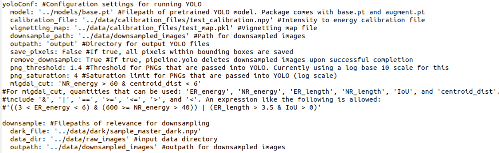

Evaluating YOLO
The source code for our pipeline can be found in migYOLO/migYOLO/pipeline/pipeline.py. Tutorials and scripts for processing images and evaluating YOLO are in migYOLO/migYOLO/main.
Pretrained YOLO weights files
Pretrained weights files are available at
migYOLO/migYOLO/data/models/base.ptmigYOLO/migYOLO/data/models/augment.pt
The relative paths of these weights files is set in migYOLO/migYOLO/main/globalConf.yaml. If you use a different set of model weights than these, make sure you set the appropriate model path in globalConf.yaml.
globalConf.yaml
migYOLO/migYOLO/main/globalConf.yaml is an editable master configuration file for evaluating YOLO.

Some notes that might not be clear in the comments in the file:
modelis the path (relative to globalConfig.yaml) to a pretrained YOLOv8 model. If you train your own, make sure you set the relative path correctlymigYOLO comes packaged with only a single
calibration_fileandvignetting_mapfile. During each Fe-55 calibration run (MIGDAL performs several of these a day), new calibration and vignetting map files are generated. During a given D-D generator run, we calibrate energies using nearest-in-time calibration file and vignetting map file that were recorded with the same MIGDAL detector settings as the D-D run. The energy calibrations when evaluating YOLO on the 1,000 sample images included with this package will therefore not be as accurate those performed in our paper.remove_downsampleis only relevant if you specify an outpath for thedownsample()function inmigYOLO.pipeline.pipeline.png_thresholdandpng_saturationshould not be changed if you’re using one of the two pre-trained YOLO models (base.ptoraugment.pt) packaged with migYOLO.migdal_cutuses the syntax of Pandas’ query function and can be adjusted however you like, provided you use columns present in the YOLO-processed Migdal candidate Dataframes (see themigYOLO/migYOLO/main/Migdal_skim_visualization.ipynbJupyter Notebook tutorial for how to look up these columns). When processing the images with YOLO, any frames with electron recoil - nuclear recoil pairs satisfying ‘migdal_cut’ will be saved as output.
Instructions
To get a feel for how to use migYOLO to process images and use YOLO to identify tracks, we would suggest the following procedure:
Work through the Jupyter notebook tutorial at
migYOLO/migYOLO/main/Intro_tutorial.ipynb. This step-by-step guide uses the high-level migYOLO.pipeline.pipeline modules to perform these tasks.Generate YOLO output files by navigating to
migYOLO/migYOLO/main(if you aren’t already there) and runningpython process_images.py. I would recommend running this twice; once with the model inglobalConf.yamlbeing../models/base.ptand the other time with../models/augment.pt. Output files will be automatically generated at theoutpathsubfield specified within theyoloConffield ofglobalConf.yaml.Work through the Jupyter notebook tutorial at
migYOLO/migYOLO/main/Migdal_skim_visualization.ipynb. This will show you how to visualize YOLO’s outputs on 2D Migdal candidates.
Analyzing outputs
The output files generated from process_images.py above can be used for general purpose analyses. The two previously mentioned jupyter notebooks show some simple examples.